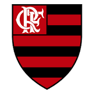

O Clube de Regatas do Flamengo é uma agremiação poliesportiva brasileira com sede na cidade do Rio de Janeiro, capital do estado de mesmo nome. Wikipédia Arena/Estádio: Maracanã Mais populares Presidente: Rodolfo Landim
17 de novembro de 1895, Rio de Janeiro, Rio de Janeiro
Estádio José Bastos Padilha, George Helal Training Center
Dorival Júnior e Vítor Pereira
José Agostinho Pereira da Pereira Cunha
